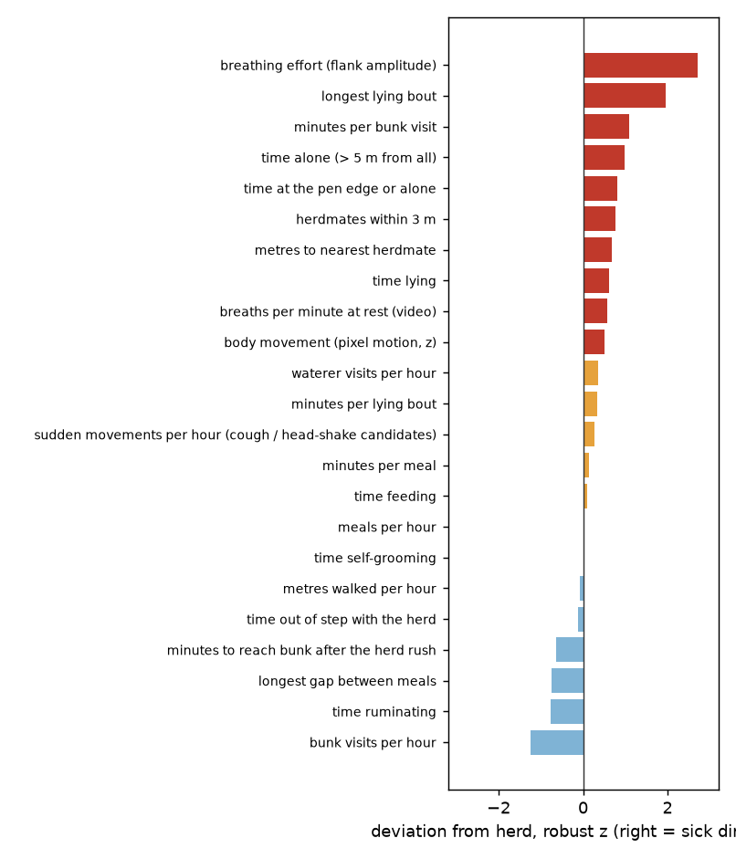

COW_10 elevated risk 0.26 rank 3 of 10
Pen 6, 11-07 00:04:06 to 11-09 00:01:11 (48.0 h of video). Seen for 39.0 h. Rank stable in 88% of time resamples. Confidence: high.
What to do
COW_10 ranks #1 on the behavior score, but the score is inflated by two artifacts: a desync 'trend' spike from a near-empty final block, and an elevated breathing-effort amplitude that is contradicted by a normal breath rate (23/min) and no respiratory distress. Appetite, feeding, and posture at the bunk all look normal. No action needed beyond routine observation; if anything, pen-ride to get a clean standing head view to rule out nasal/ocular discharge, which the cameras could not assess.
Why
- minutes per bunk visit 6.5 min vs herd median 9.5 min (z -1.1, 39.0 h observed)
- longest lying bout 139 min vs herd median 100 min (z +1.9, 37.1 h observed)
- bunk visits per hour changed -2.3 /h day-to-day (herd -1.5 /h)
Behavior score 0.31; visual signs moved the log-odds by -0.25.
Discounted as artifacts
- desync_share: The desync_share__trend +3.0 z is driven almost entirely by the final 11-09 00h block (value 1.0 vs herd 0, dev +20) which is a near-empty few-minute end-of-coverage block, plus a single 11-08 12h spike. Base desync_share is normal (16% vs 17%, z -0.1). The trend deviation is a coverage/edge artifact, not a sustained drift. (I0002)
- breathing_effort: Flank-amplitude z of +2.7 (161%) is contradicted by a normal, low breath rate of 23/min from 7 valid windows and no distress posture; the amplitude is inflated by very close bunk windows (large box pixel scale), not true effort. (I0001, V0002)
Behavior vs herd

Clips
behavior: bunk visit min (at bunk): cam1 11-07 16:39:24 to 16:39:36
closest view: cam2 11-08 16:32:39 to 16:32:51
Visible clinical signs (agent review, self-checked)
| sign | status | evidence | note |
|---|
| head carried low / depressed | not_assessable | I0009, I0010 | Only head-down-at-bunk (eating) frames available; no standing non-eating head-toward view to judge topline-relative carriage. |
| ears drooping | absent | I0009, V0001 | Side-on daylight head crop shows ears carried upright/alert while eating. |
| nasal discharge | not_assessable | I0009 | Muzzle buried in feed in all close daylight frames; no clean >=450px muzzle view. |
| ocular discharge / tearing | not_assessable | I0009 | Eye visible but not a clean enough daylight view to confirm; no discharge seen but not confidently assessable. |
| laboured / open-mouth breathing, extended neck | absent | I0001, V0002 | 23/min across 7 valid windows, below herd; no open-mouth/extended-neck/flank-heave posture observed. |
| coughing posture | not_assessable | I0001 | jerk_rate normal (31 vs 30/h); no cough sequence reviewed. |
| hollow left flank / gaunt | not_assessable | I0010 | No clear left-flank profile; body appears full in bunk frames but not confirmable. |
Agent assessment
I do NOT believe the two biggest drivers. The desync_share__trend spike is an end-of-coverage artifact (near-empty final block), and the elevated breathing_effort amplitude is not corroborated by rate or posture. Appetite is intact: feed_response shows COW_10 reaching the bunk promptly at major herd rushes (0-7 min, latency 14.9 vs 19.1 min) and staying as long or longer (18-27 min), with more but shorter visits (rate 1.5 vs 1.1/h explains the shorter 6.5-min visits). Longer lying bouts and slightly more isolation are mild and within noisy short-coverage range. Overall behavior looks largely normal for a top-ranked-by-score but clinically unremarkable cow.
Sources
- [dart] DART pen-riding signs (Depression: head down, droopy ears, stiff gait; Appetite: slow to the bunk; Respiration: laboured breathing, nasal discharge, cough; Temperature). Purdue Extension VA-33-W. https://www.extension.purdue.edu/extmedia/VA/VA-33-W.pdf
- [ear_acc2022] Early detection of respiratory diseases in calves by use of an ear-attached accelerometer (n = 508): more inactive time on d -4, -2, 0 and longer lying on d -5, -2. Animals 2022. https://pubmed.ncbi.nlm.nih.gov/35565520/
- [feedlot_acc] High-risk feedlot calves with accelerometers (n = 364): activity reductions began >= 6 d before BRD diagnosis and were largest the day before; lying-bout changes. The Bovine Practitioner. https://bovine-ojs-tamu.tdl.org/bovine/article/view/2883
- [hart1988] Hart B.L. 1988. Biological basis of the behavior of sick animals. Neurosci. Biobehav. Rev. 12:123-137 (sickness behavior: lethargy, anorexia, reduced grooming, social withdrawal).
- [marchesini2018] Marchesini G. et al. 2018. Rumination and activity data as health indicators in beef cattle during the early fattening period. Vet. J. https://www.research.unipd.it/retrieve/e14fb26c-9cb8-3de1-e053-1705fe0ac030/Marchesini%202018_TVJ.pdf
- [merck_resp] Merck Veterinary Manual, reference guides: resting respiratory rate of adult cattle about 26-50 breaths/min; rapid, laboured breathing is a cardinal sign of respiratory disease. https://www.merckvetmanual.com
- [padua_water] Electronic drinkers in fattening beef cattle: animals treated for BRD drank less water (20.9 vs 27.3 L/d) and intake fell 2 d before treatment, but drinking time and visit counts did not change. Univ. Padova. https://research.unipd.it/handle/11577/3572258
- [scirep2022] Calves' social network position changes during an experimental respiratory pathogen challenge. Sci. Rep. 2022. https://doi.org/10.1038/s41598-022-13088-2
- [tamu_cusum] Texas A&M GrowSafe bull studies: feeding-behavior traits (bunk-visit duration, head-down duration, variability of non-feeding intervals) change 1-14 d before BRD diagnosis; CUSUM monitoring (J. Anim. Sci. 2019, doi:10.1093/jas/sky486). https://pmc.ncbi.nlm.nih.gov/articles/PMC6396243
- [toaff2018] Toaff-Rosenstein R.L., Tucker C.B. 2018. The sickness response at and before clinical diagnosis of spontaneous bovine respiratory disease. Appl. Anim. Behav. Sci. (feeding time reduced on the diagnosis day; fever precedes anorexia).
- [white2009] White B.J., Renter D.G. 2009. Bayesian estimation of the performance of using clinical observations and harvest lung lesions for diagnosing BRD in post-weaned beef calves. J. Vet. Diagn. Invest. 21:446-453 (clinical-sign diagnosis: Se ~62 %, Sp ~63 %).
- [wolfger2015] Wolfger B. et al. 2015. Feeding behavior as an early predictor of bovine respiratory disease in North American feedlot systems. J. Anim. Sci. 93:377-385 (meal intake, meal time and bunk-visit frequency predict BRD hazard in the week before pulling).
This is a screening index from video behavior, not a diagnosis. Confirm with a hands-on exam (rectal temperature, lung auscultation) before treatment.
Clinical-sign diagnosis of BRD is itself only ~62% sensitive and ~63% specific [white2009].